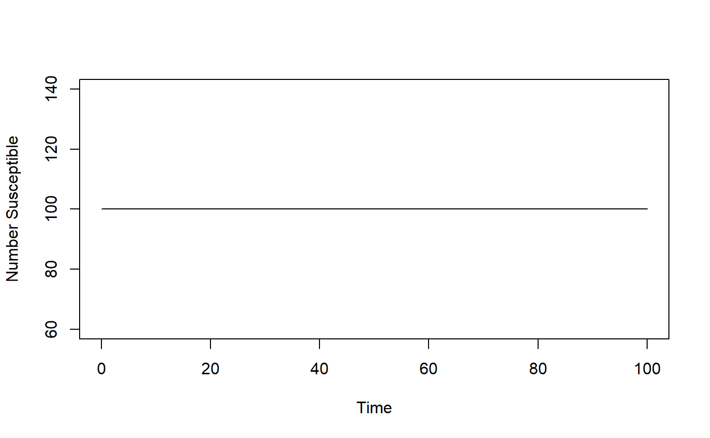

R/simulate_vectortransmission.R
simulate_vectortransmission.RdThis model allows for the simulation of a vector-borne infectious disease
simulate_vectortransmission(Sh0 = 1000, Ih0 = 1, Sv0 = 0, Iv0 = 0, tmax = 120, b1 = 0.01, b2 = 0, m = 0, n = 0, g = 1, w = 0)
| Sh0 | initial number of susceptible hosts |
|---|---|
| Ih0 | initial number of infected hosts |
| Sv0 | initial number of susceptible vectors |
| Iv0 | initial number of infected vectors |
| tmax | maximum simulation time, units of months |
| b1 | rate of transmission from infected vector to susceptible host |
| b2 | rate of transmission from infected host to susceptible vector |
| m | the rate of births of vectors |
| n | the rate of natural death of vectors |
| g | the rate at which infected hosts recover/die |
| w | the rate at which host immunity wanes |
This function returns the simulation result as obtained from a call to the deSolve ode solver
A compartmental ID model with several states/compartments is simulated as a set of ordinary differential equations. The compartments are Sh, Ih, Rh, and Sv, Iv. The function returns the output from the odesolver as a matrix, with one column per compartment/variable. The first column is time.
This function does not perform any error checking. So if you try to do something nonsensical (e.g. any negative values or fractions > 1), the code will likely abort with an error message
See the information in the corresponding shiny app for model details See the documentation for the deSolve package for details on ODE solvers
The UI of the shiny app 'VectorTransmission', which is part of this package, contains more details on the model
# To run the simulation with default parameters just call this function result <- simulate_vectortransmission() # To choose parameter values other than the standard one, specify them e.g. like such result <- simulate_vectortransmission(Sh0 = 100, Sv0 = 1e5, tmax = 100) # You should then use the simulation result returned from the function, e.g. like this: plot(result[,1],result[,2],xlab='Time',ylab='Number Susceptible',type='l')